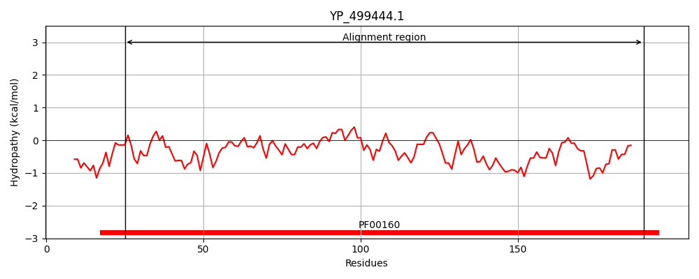
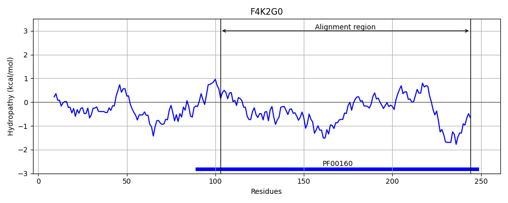
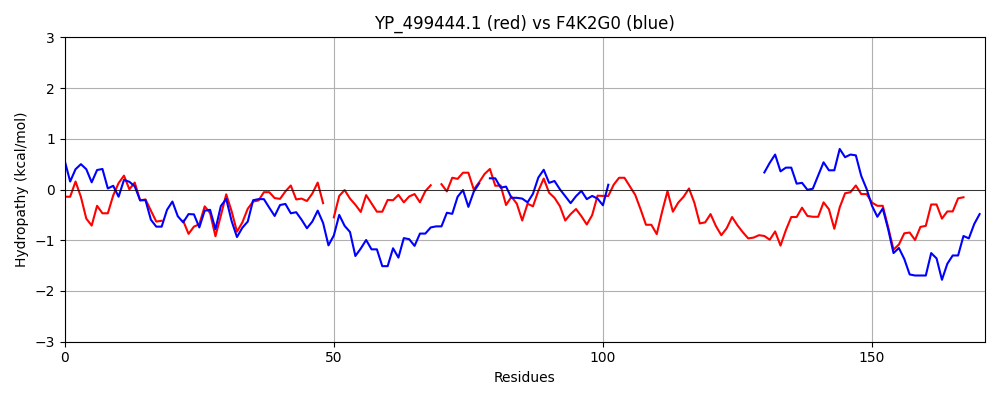

Hit Accession: F4K2G0
Hit TCID: 3.D.1.8.1
Hit Description: gnl|BL_ORD_ID|4280 gnl|TC-DB|F4K2G0|3.D.1.8.1 Peptidyl-prolyl cis-trans isomerase OS=Arabidopsis thaliana GN=CYP20-2 PE=3 SV=1
Mach Len: 171
e:0.000000
Query TMS Count : 0
Hit TMS Count: 0
TMS-Overlap Score: 0.000000
Predicted Substrates:CHEBI:5584;hydron
BLAST Alignment:
Score: 274 , Bit scores: 110 bits, E-value: 7.4e-30, Alignment length: 171, Percentage identity: 42
Query: 25 GDMTFKLFPNIAPKTVENF---VTHAKNGYYDGITFHRVINDFMIQGGD-PTATGMGGESIYGGAFEDE-FSLNAFNLYGALSMANSGPNTNGSQFFIVQMKEVPQNMLSQLADGGWPQPIVDAYGEKGGTPWLDQKHTVFGQIIDGETTLEDIANTKVGPQDKPLHDVVI 190
G + L+ + P+TVENF T K Y G TFHRVI DFMIQGGD G GG+S+YG F+DE F L+ G LSMAN+GPNTNGSQFFI +K T WLD +H VFGQ+I+G ++ I + D+P VVI
Sbjct: 103 GRIVIGLYGDDVPQTVENFRALCTGEKGFGYKGSTFHRVIRDFMIQGGDFEKGNGTGGKSVYGRTFKDENFKLSHVGP-GVLSMANAGPNTNGSQFFICTIK----------------------------TSWLDGRHVVFGQVIEGMEVVKLIEEQETDRGDRPRKKVVI 244 | Protein Hydropathy Plots: |
|---|
|  |  |
Pairwise Alignment-Hydropathy Plot:
|
|---|
|  |